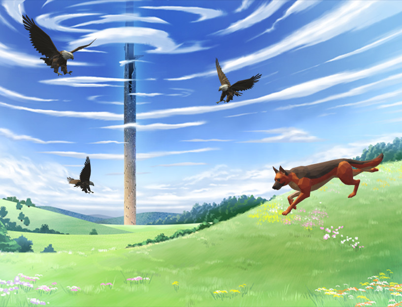

歡迎來到神諭
Welcome to Divinity

歡迎來到神諭
看似簡單的東西，總是充滿危險

「神諭」是一款頗為知名的的虛擬實境線上遊戲，這次的製作人也以著前所未有的的口號宣傳著本次的改版，更抽選5名玩家參加遊戲的封閉測試，主角正是其中一名。
本次改版是在遊戲中引入AI透過機器學習打造出最適合隊伍的遊戲關卡，挑戰的內容包跨密室求生、卡牌戰鬥、或是傳統的RPG戰鬥系，而測試關卡則是在名為無垠塔的高塔中，每攻略一定層數關卡則會獲得相對應的獎賞。
內測試的目標以五人為組的小隊擊破關卡，再打倒以製作人設計的角色斯比爾作為結尾，但發生意外而導致AI出現程式錯誤反而將主角一行人封閉在塔中，發生異變的關卡也導致難度持續飆升，通過層層難關、打倒異變的人工智慧，似乎成為唯一的手段...
男主角:雷
年紀:17歲
從小就抱持著異常強烈的正義感，憧憬著成為挺身而出、拯救他人的英雄，時常為班上受霸凌的同學打抱不平，卻也因此成為班上霸凌集團眼中的「獵物」。成為霸凌對象的雷特在此時恰好接觸到了「神諭」這款遊戲，對於不論是身心靈都遍體鱗傷的雷特，神諭的出現無疑是給了他精神上重大的支柱。"也許只能在虛幻的世界中成就自己的理想了吧"心中不斷冒出這般消極想法的雷特收到了來自「神諭」營運的邀請…

女主角:艾莉絲
年紀：16歲
因家庭失和的原因導致艾莉絲十分缺乏對其他人的信任，但卻又渴望與和他人交流，或許是想在與陌生人的互動中找到不曾有過家庭的氛圍。輾轉流離在各個隊伍間。文靜隨波逐流的個性也導致某些同隊玩家的非分之想，甚至演變成隊伍內的衝突，也因此背負了掃把星的罵名。

神:馬克斯
年紀：26歲
神諭的主要製作人，期望打造出世界上最完美的網路遊戲，剛愎自負且喪心病狂的性格導致他在職場上樹立眾多的敵人。由於總公司高層投資失利，因此要求馬克斯在遊戲的製作和經營上能有更大的突破，借此吸引更多玩家註冊。迫於高層壓力下，馬克斯果斷推出神諭大更新，在未經過任何風險測試下邀請五名玩家參加此次的封測。
駭客:凱文(Kevin)
年紀:35歲
受雇其他企業的委託，潛入「神諭」系統內竊取遊戲內機密資料以及破壞遊戲內的人工智慧。在負債和長期失業的雙重壓力下這份委託正好成了他的救命稻草，平時偽裝成「神諭」製作團隊的內部員工，以職位之便將寄給五名測試玩家的其中一份邀請函替換成自己，打算從內部瓦解整個遊戲系統。

狗:旺財
經常在製作工作室附近遊蕩的小狗，是整個辦公室的吉祥物，很容易與人親近。在神諭的封測開始時誤入遊戲系統的連接器，出乎人意料的和遊戲的連接器完美的契合，製作人也以看起來很有趣同意了牠成為了封閉測試的一分子。